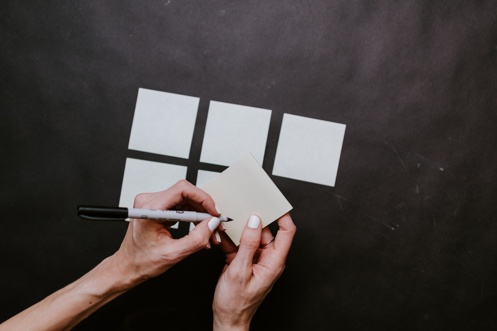

Test jezelf
Vermijd passief lezen van teksten, maar ga op zoek naar actieve manieren om jezelf te testen, bijvoorbeeld laten ondervragen door iemand.
Hieronder onze tips om studeren efficiënt, houdbaar en zo aangenaam mogelijk te houden!
Vermijd passief lezen van teksten, maar ga op zoek naar actieve manieren om jezelf te testen, bijvoorbeeld laten ondervragen door iemand.
Probeer niet alle leerstof op één moment te studeren. Je haalt de beste resultaten door deze momenten te spreiden, bijvoorbeeld kortere sessies 1 keer per week.
Zorg ervoor dat je de 'waarom' begrijpt, en niet zomaar kan opsommen wat er geschreven stond.
Werk in kortere intervallen van 20 tot 50 minuten, en neem dan een vaste pauze van 5 tot 10 minuten. Hou hier niet te hard aan vast en voorzie langere pauzes op langere studeersessies.
25:00
Zoek uit wat voor jou het beste werkt: stilte, muziek, of het achtergrondgeluid van een koffiebar.
Voldoende slapen, gezond eten en regelmatige beweging zijn de basis voor jouw concentratievermogen. Plan dus een wandeling in op een drukke dag, en merk zelf het verschil!